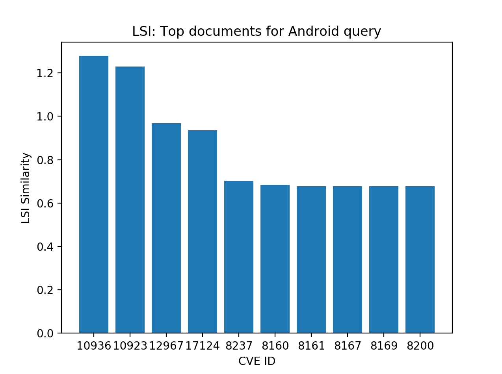

Scatterplots: Android and iOS

For the scatterplots the most relevant documents for LSI were the higher numbers while TFIDF it is the lower numbers. In TFIDF the score of 1.0 means that there is no match.
Android: Top 10

Shows the top 10 documenst for LSI and TFIDF with the Android query.
iOS: Top 10
Shows the top 10 documenst for LSI and TFIDF with the iOS query